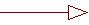

Standards:
Generalization

Generalization |
A specialization / generalization relationship in which objects of the specialized
element (the child) are substitutable for objects of the generalized element (the parent). |
| Related Information: |
|
Topics
Background 
The relationship is often referred to as Inheritance.
As the analysis model is really a type model there is no restriction on the use of
multiple inheritance but the use of inheritance is restricted to the sub-type
relationship. In the design model multiple inheritance is not allowed.
All use of generalization must conform to the principle of substitutability – all
of the sub-types must be substitutable for their super types.
Naming Standards
The naming of generalizations is optional. Generally generalizations will not be named.
General Documentation Standards
All generalization documentation is optional. If it adds clarity to the model then the
generalizations can be named and described but this is uncommon in most models.
When necessary, write a brief description of the generalizations.
Stereotypes
| Stereotype |
Used |
Comments |
| <<implementation>> |
No |
Specifies that the child inherits the
implementation of the parent but does not make public or support its interfaces,
thereby violating substitutability. Used to model private inheritance in C++. |
Examples
None |